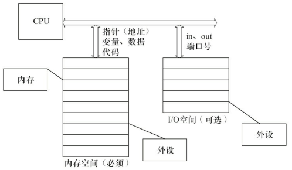
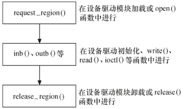
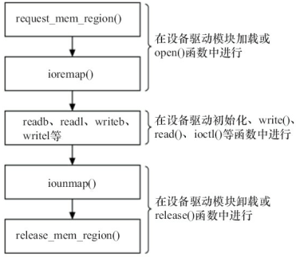

与硬件通信¶
《Linux设备驱动程序》 - 第三版 的第9章，《Linux设备驱动开发详解》 - 宋宝华 的第11章，的读书笔记，本文中的所有代码可在GitHub仓库中找到，本文中的实验涉及与硬件的通信，可能会由于硬件的原因，无法得到期望的结果
设备通常会提供一组寄存器来控制设备、读写设备和获取设备状态，即控制寄存器、数据寄存器和状态寄存器。这些寄存器可能位于I/O空间中，也可能位于内存空间中。
- 当位于I/O空间时，被称为I/O端口
- 当位于内存空间时，被称为I/O内存

I/O端口¶
在x86处理器中存在着I/O空间，而大多数嵌入式控制器(如ARM、PowerPC等)中并不提供I/O空间，只存在内存空间。I/O空间通过特定的指令in和out来访问。
在linux中，/proc/ioports记录了系统分配的所有I/O端口。例如，下面所列出的端口都已经被对应的驱动所占用：
> sudo cat /proc/ioports
0000-0cf7 : PCI Bus 0000:00
0000-001f : dma1
0020-0021 : PNP0001:00
0020-0021 : pic1
0040-0043 : timer0
0050-0053 : timer1
0060-0060 : keyboard
0061-0061 : PNP0800:00
0064-0064 : keyboard
0070-0071 : rtc0
0080-008f : dma page reg
00a0-00a1 : PNP0001:00
00a0-00a1 : pic2
00c0-00df : dma2
00f0-00ff : fpu
0170-0177 : 0000:00:07.1
0170-0177 : ata_piix
01f0-01f7 : 0000:00:07.1
01f0-01f7 : ata_piix
0376-0376 : 0000:00:07.1
0376-0376 : ata_piix
03c0-03df : vga+
03f6-03f6 : 0000:00:07.1
03f6-03f6 : ata_piix
04d0-04d1 : PNP0001:00
0cf0-0cf1 : pnp 00:00
request_region函数用于在驱动程序中注册I/O端口。如果函数失败，可能端口已经被其他驱动所占用。
#include <linux/ioport.h>
// 注册I/O端口
// first - 端口起始地址
// n - 需注册的端口个数
// name - 设备名称，显示在/proc/ioports中
struct resource *request_region(unsigned long first, unsigned long n, const char *name);
// 释放I/O端口
void release_region(unsigned long start, unsigned long n);
I/O端口访问的一种途径是直接使用I/O端口操作函数。在设备打开或驱动模块被加载时申请I/O端口区域，之后使用inb、outb等进行端口访问，最后在设备关闭或驱动被卸载时释放I/O端口范围。下图展示了I/O端口访问的基本流程：

驱动程序¶
驱动"io_port"通过request_region在"0x378"I/O端口上，注册了一个名为"short"的I/O端口驱动：
#define DEVICE_NUM 2
#define SHORT_MAJOR 110
#define SHORT_PORT_BASE 0x378
static int __init short_init(void)
{
int result;
if (!request_region(SHORT_PORT_BASE, DEVICE_NUM, "short"))
{
printk(KERN_INFO "[short_init] can't get I/O port address 0x%x\n", SHORT_PORT_BASE);
return -ENODEV;
}
result = register_chrdev(SHORT_MAJOR, "short", &short_fops);
if (result < 0)
{
printk(KERN_INFO "[short_init] can't get major number\n");
release_region(SHORT_PORT_BASE, DEVICE_NUM);
return result;
}
printk(KERN_INFO "[short_init] done\n");
return 0;
}
module_init(short_init);
安装上"short"驱动后，会在/proc/ioports文件中对应的位置（0x378），出现"short"驱动：
> sudo cat /proc/ioports | grep short
0378-0379 : short
用户读写¶
Linux内核提供了一系列的函数，让用户可以方便访问I/O端口，包括：
// 读写字节端口（8位）
unsigned inb(unsigned port);
void outb(unsigned char byte, unsigned port);
// 读写字端口（16位）
unsigned inw(unsigned port);
void outw(unsigned short word, unsigned port);
// 读写长字端口（32位）
unsigned inl(unsigned port);
void outl(unsigned longword, unsigned port);
例子"io_port_user/inp"和"io_port_user/outp"分别提供了读写I/O端口的方法：
static int read_and_print_one_i386(unsigned int port, int size)
{
...
if (size == 4)
printf("%04x: 0x%08x\n", port, inl(port));
else if (size == 2)
printf("%04x: 0x%04x\n", port, inw(port));
else
printf("%04x: 0x%02x\n", port, inb(port));
return 0;
}
static int write_one_i386(unsigned int port, int size)
{
...
if (size == 4)
outl(val, port);
else if (size == 2)
outw(val & 0xffff, port);
else
outb(val & 0xff, port);
return 0;
}
除了上述访问方式外，用户也可以直接通过读写/dev/port文件，对I/O端口进行访问。可直接参考上面例子中的其他代码，此处不再赘述。
I/O内存¶
在linux中，/proc/iomem记录了系统分配的所有I/O内存。例如，下面所列出的地址都对应了相应的驱动：
> sudo cat /proc/iomem
00000000-00000fff : Reserved
00001000-0009e7ff : System RAM
0009e800-0009ffff : Reserved
000a0000-000bffff : PCI Bus 0000:00
000c0000-000c7fff : Video ROM
000ca000-000cafff : Adapter ROM
000cb000-000ccfff : Adapter ROM
00000000-00000000 : PCI Bus 0000:00
00000000-00000000 : PCI Bus 0000:00
000d0000-000dbfff : PCI Bus 0000:00
000dc000-000fffff : Reserved
000f0000-000fffff : System ROM
00100000-bfedffff : System RAM
bfee0000-bfefefff : ACPI Tables
bfeff000-bfefffff : ACPI Non-volatile Storage
bff00000-bfffffff : System RAM
c0000000-febfffff : PCI Bus 0000:00
c0000000-c0003fff : 0000:00:10.0
e5b00000-e5bfffff : PCI Bus 0000:22
...
和I/O端口一样，在使用I/O内存前，需要先通过request_mem_region向内核申请：
#include <linux/ioport.h>
// 申请I/O内存，从start开始分配len字节长的内存区域
// name - 设备名称，显示在/proc/iomem中
struct resource *request_mem_region(unsigned long start, unsigned long len, char *name);
// 释放I/O内存
void release_mem_region(unsigned long start, unsigned long len);
I/O内存的访问首先是调用request_mem_region申请资源，接着将寄存器地址通过ioremap映射到内核空间虚拟地址，之后就可以通过Linux设备访问编程接口访问这些设备的寄存器了。访问完成后，应对ioremap申请的虚拟地址进行释放，并释放release_mem_region申请的I/O内存资源。下图展示了I/O内存访问的基本流程：

驱动程序¶
驱动"io_mem"通过request_mem_region在"0xfe800000"地址上，注册了一个名为"short"的I/O内存驱动：
#define DEVICE_NUM 2
#define SHORT_MAJOR 109
#define SHORT_MEM_BASE 0xfe800000 // pnp
unsigned long io_short_base = 0;
static int __init short_init(void)
{
int result;
if (!request_mem_region(SHORT_MEM_BASE, DEVICE_NUM, "short"))
{
printk(KERN_INFO "[short_init] can't get I/O mem address 0x%x\n", SHORT_MEM_BASE);
return -ENODEV;
}
io_short_base = (unsigned long) ioremap(SHORT_MEM_BASE, DEVICE_NUM);
printk(KERN_INFO "[short_init] ioremap returns 0x%lx\n", io_short_base);
result = register_chrdev(SHORT_MAJOR, "short", &short_fops);
if (result < 0)
{
printk(KERN_INFO "[short_init] can't get major number\n");
release_mem_region(SHORT_MEM_BASE, DEVICE_NUM);
return result;
}
printk(KERN_INFO "[short_init] done\n");
return 0;
}
module_init(short_init);
安装上"short"驱动后，会在/proc/iomem文件中对应的位置（0xfe800000），出现"short"驱动：
> sudo cat /proc/iomem | grep short
fe800000-fe800001 : short
用户读写¶
当I/O内存通过ioremap映射到内核空间虚拟地址后，内核空间就可以通过此虚拟地址，自由访问I/O内存空间了。如果想让用户空间也能访问I/O内存，可在驱动中实现mmap函数，将I/O内存的地址映射到用户空间。或者，也可以通过读写/dev/mem文件，在用户空间访问I/O内存。
例子"io_mem_user/inm"和"io_mem_user/outm"通过读写/dev/mem文件，可访问相应位置的I/O内存。